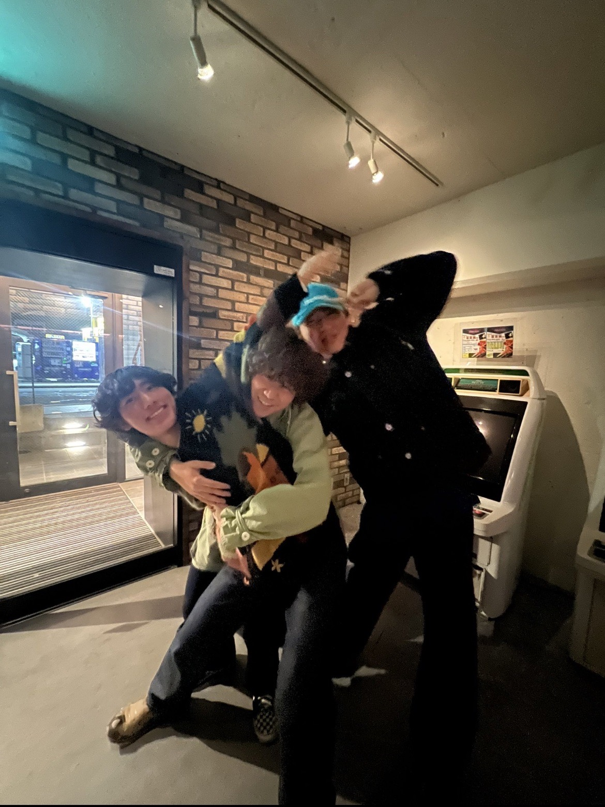

Welcome!
Hello! My name is Tezuka. I am fascinated by the depth of information and pursue new technologies every day. I am particularly interested in web development and am studying HTML, CSS, and JavaScript. I created this website to share the results of my studies and my experiences so far. I enjoy unraveling the logic of programming and pursuing beautiful designs.
During my student life, I participated in various projects and learned the importance of working together as a team to solve problems. What impressed me most was designing and implementing a system to solve user problems. Although I was confused at first, the sense of accomplishment I felt as I cleared each hurdle was extraordinary. Through these experiences, I was able to improve not only my technical skills but also my problem-solving and communication skills.
Outside of coding, I enjoy visiting cafés. I find it valuable to relax and think about ideas while drinking delicious coffee at new cafés. Reading is also one of my hobbies, and I often read science fiction novels and books about history. These hobbies often serve as a source of ideas and inspiration for my programming.
